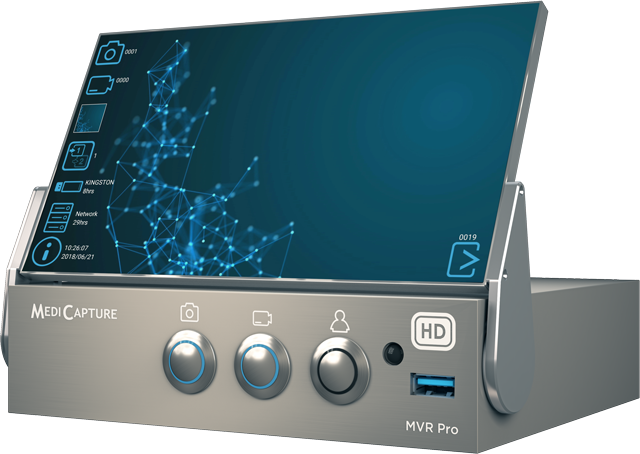

from now through the end of the year.
The feature-rich MVR Pro is our most advanced, premium-quality medical video recorder. With an easy built-in touchscreen monitor, full-patient workflow capability, and with the DICOM Made Easy upgrade, you’ll be impressed by its capabilities and how easy it is to manage recorded data.
In addition to the DICOM Made Easy upgrade, the MVR Pro also comes with:
With MVR Manager, you can:
With MVR Secure, you can:
*Cannot be used simultaneously
**Check camera compatibility
Turn any imaging device in your OR, or surgery facility, into a fully compliant DICOM modality with the MVR Pro and DICOM Made Easy and get $250 off each now through the end of 2020.
Offer available through December 31, 2020 to healthcare organizations (hospitals, surgery centers, doctor offices) in the United States only with the purchase of MediCapture’s MVR Pro medical video recorder. Offer of $250 off the MVR Pro applies to the MVR Pro when purchased separately. MVR Pro must be purchased to receive the $250 off offer for DICOM Made Easy. USB included; charges for additional accessories, such as keyboards, tablets, ethernet cables, etc. may apply. Installation not included. ©2020 MediCapture. All rights reserved.